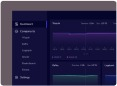
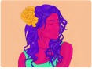

Créer un design system à partir
de zéro
Dans cet article, je partage mon approche pour mettre en place un design system clair et efficace, afin de garantir la cohérence visuelle d'un projet digital.
Passionné par le code et le design, j'aide les entreprises et les créateurs à développer des sites modernes, performants et adaptés à leurs besoins. Mon objectif est de transformer vos idées en expériences numériques fluides et efficaces.
Télécharger mon CVDans cet article, je partage mon approche pour mettre en place un design system clair et efficace, afin de garantir la cohérence visuelle d'un projet digital.
Découvrez mes techniques pour concevoir des icônes nettes et précises dans Figma, adaptées aussi bien au web qu'aux applications mobiles.

Un projet de conception d'interface utilisateur pour une plateforme de gestion. L'objectif était de proposer un tableau de bord intuitif et esthétique.

Série d'illustrations numériques réalisées avec une palette de couleurs audacieuses, explorant l'identité et l'émotion à travers le portrait.
Un projet créatif consistant à explorer et styliser les caractères de la typographie malayalam à travers une série de visuels graphiques.
Vous avez une grande idée ou un projet à développer et besoin d'aide ? Contactez-moi, je serai ravi d'échanger avec vous et de vous accompagner.